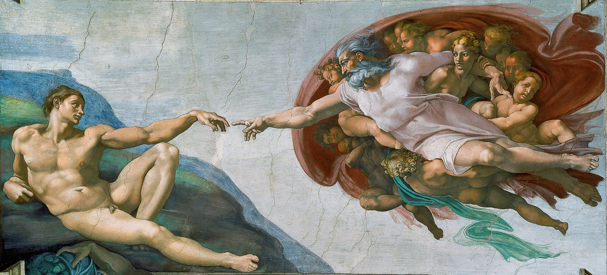

On the small, charged distance where art and philosophy do their quiet, lifelong work.

For five centuries the most famous gesture in Western art has been left deliberately unfinished. Michelangelo painted two hands reaching across a sliver of bare plaster — and then did not close the gap. God strains toward Adam; Adam barely lifts his arm; and between their fingers there remains a distance you could cover with a coin. The whole force of the picture lives in that distance. It is the reason we are still looking.
We tend to assume meaning arrives at the moment things connect — when the answer lands, the lesson takes, the hands finally touch. The ceiling proposes something stranger: that the charge is in the approach, not the contact. Art and philosophy are the two arms of that reach. One comes at the world through the senses, the other through the argument, and each spends its life extending toward a meaning it never quite grips.
A painting does not tell you what to think; it rearranges what you notice. Stand in front of the right image and your attention is quietly re-plumbed — the ordinary made strange enough to see again. That is not decoration. It is a technology for widening the aperture of a life, for making a person feel the weight of things they had stopped weighing.
Where art enlarges perception, philosophy interrogates it. It asks what you actually mean by the words you live by — freedom, good, self, enough — and refuses the comfortable answer. It is uncomfortable on purpose. Its gift is not certainty but a better quality of doubt: the kind that keeps you honest, and keeps the reach alive.
Meaning is not held in either hand. It is the current that leaps the gap.
A poem read at the right hour has talked people back from despair. A single idea — that you are not your thoughts; that suffering is not an argument against living — has reorganised whole biographies. Art and philosophy change what a person can perceive and what they can bear, and those two changes are most of what we mean when we say a life is going well.
So we live where Michelangelo left us: mid-reach, fingers out, the touch forever a coin's width away. It can feel like failure. It is not. That gap is the space in which everything human happens — the wanting, the making, the asking. Art shows us the gap is beautiful. Philosophy insists it is worth crossing.